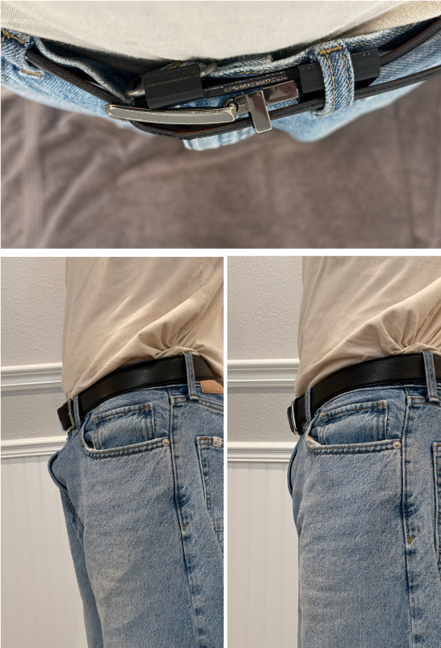
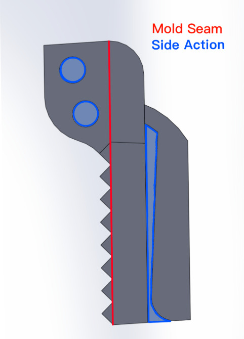

Mass Manufacturable Belt Clip
Many people are aware of the issue that arises when you wear pants with a waist size several inches too large and a belt. Sure the belt keeps your pants up, but now all the extra fabric bunches up in front of your pelvis. I used this problem as an opportunity to develop a solution. My goal was to optimize the final design for affordable manufacturing. I believe I was able to achieve this with a simple two part design, one large plastic piece designed to be injection molded and a simple metal wire serving as the clip.

Project Specifications
-
Must use as few parts as possible
- Must be optimized for manufacturing (injection molding and wire forming)
- Must be universal (must work with different belts and pants)
- Must be hidden behind the belt when in use
- Must be comfortable for the user
- Must remain operational after many use cycles
Design Overview
On one side, the plastic piece contains a compliant mechanism that slips onto, and secures itself to, the leather part of the belt, meaning that the metal clip on the other side is hidden behind the belt buckle. The metal clip is what secures the device to the pants, preventing the fabric from slipping out from under the buckle and forming the infamous fabric protrusion. The holes for the metal clip are offset, effectively turning the single piece into its own spring. As you lift the clip, the ends move away from each other, loading the wire with torsion, causing it to snap back into place.
Manufacturability
Drawing upon concepts learned in my Manufacturing Systems course, along with additional research, I developed a manufacturing plan. All mold-release surfaces incorporate a 3° draft angle to ensure that the part can be removed from the mold. ABS will be chosen for its various properties that make it well suited for compliant mechanisms (source), such as its young’s modulus, fatigue resistance properties, etc. The metal clip will be made of 2mm diameter 302/304 stainless spring wire, ASTM A313 (source) and will be formed using two dimensional 2D CNC wire forming as it is the best option for affordable large scale production (source).
